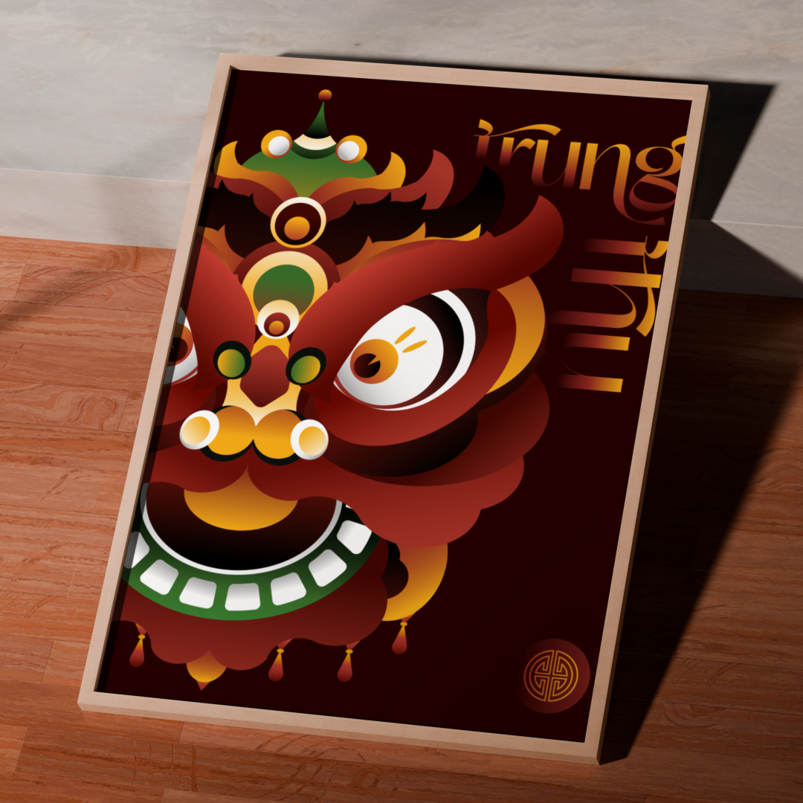
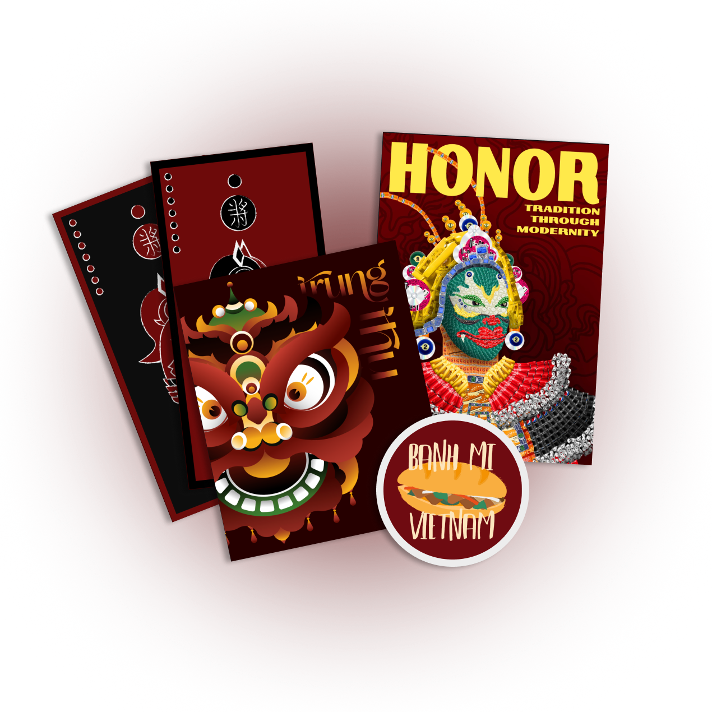

1. Trung Thu - Festival


Graphic Designer
Illustrator
a tribute to my Vietnamese heritageThis collection is . I’ve always felt that to understand and admire the beauty of the world, I must first recognize and cherish the beauty that comes from my own culture.
In this collection, I offer a glimpse into the colors and spirit of my culture. These works were created when I was 17–18 years old, a period when I was actively exploring and experimenting with different art styles rooted in my cultural background. This was a pivotal time that deeply influenced both my artistic growth and my sense of self.
The purpose of this collection is to share my personal perspective on my culture. Through the process, I realized that design isn’t just a search for the new; it’s also a return to what we often overlook, a way to honor what has always been there. That understanding shaped this body of work, and it’s the message I hope comes through in every piece.
While I’ve created more pieces within this theme, these four stand out as the strongest reflections of it — capturing the spirit of performing art, the joy of festivals, the comfort of food, and the nostalgia of traditional board games.
